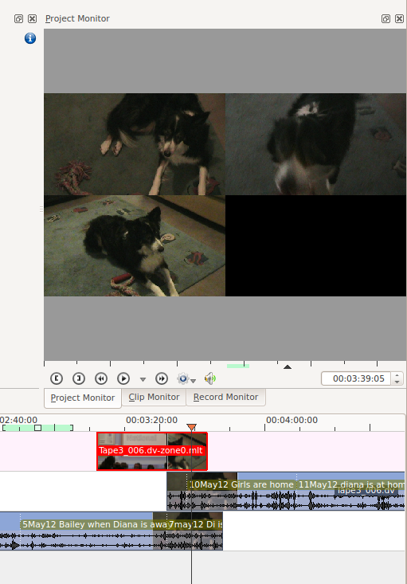

Project Monitor - Right Click menu¶
Contents
These are the menu items that are available when you right click a clip in the Monitors. These actions effect the clip that is currently selected in the timeline. Similar menu items are available from a Right click menu in the clip monitor. However clip monitor menu items effect the currently selected clip on the project tree.
Play…¶
Play¶
Plays the clip currently selected in the project tree
Play Zone¶
Plays the current zone and stops.
Loop Zone¶
Plays the current zone in a continuous loop.
Loop Selected Clip¶
Go To¶
Go to Project Start¶
When this item is selected from Project Monitor it goes the beginning of the project.
Go to Previous Snap Point¶
Moves the clip position to the previous editing Point. Snap points are sections in clips that other clips snap to when “Snap” is turned on.
Snap points include markers, zone in-points, zone out-points, guides, transition start points etc
Go to Zone Start¶
Goes to the start of the Zone.
Go to Next Snap Point¶
Moves the clip position to the next editing Point. Snap points are sections in clips that other clips snap to when “Snap” is turned on.
Snap points include markers, zone in-points, zone out-points, guides, transition start points etc
Go to Project End¶
When this item is selected from Project Monitor it goes the end of the project.
Extract frame¶
Extracts the frame currently in the project monitor as a .PNG image which you can save to the file system.
Split View¶
Selecting this allows you to view all the video tracks at once in split screen in the project monitor. See picture.
{kind=link}
Monitor overlay infos¶
???
Real time (drop frames)¶
Setting this to the Checked state means the clip monitor will drop frames during playback to ensure the clip plays in real time. This does not effect the final rendered file - it just effect how the clip appears when being previewed in the clip monitor